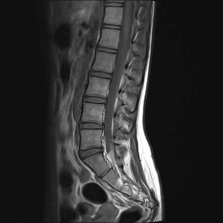
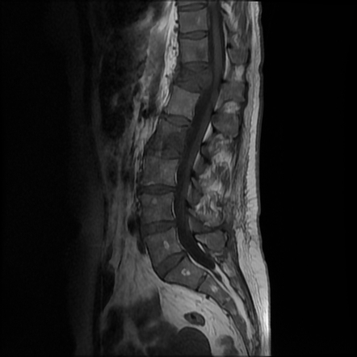
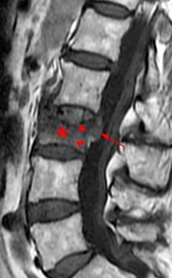

PATHOLOGICAL FRACTURE
2. CASE STEM (VERSION 1 – MAIN VERSION)
Your next patient is a 72 year old lady who is scheduled for a hip replacement surgery due to severe OA.
As Part of her pre op assessment an Xray has been done which shows a lesion and fracture in T5, the radiologist has reported: a Pathological fracture secondary to cancer suspected.
She is a known case of COPD, pleural effusion and anemia.
Task:
- Take history from the patient
- Explain reports to her
- Explain diagnosis and differentials
- Discuss implications
- Explain your management
4. CORE IDEA OF THE CASE
This case goes back to the basic idea of metastasis to the spine
The patient:
- Has a pathological vertebral fracture
- Radiologist is concerned about malignancy
- So you must think about cancers that spread to the spine
5. CANCERS THAT SPREAD TO THE SPINE
Main cancers:
- Breast
- Prostate (not in this patient but in general)
Also important:
- Lung
- Melanoma
- Thyroid
- Kidney
Also can spread:
- Lymphoma
- GI malignancies
- Uterine cancers
70–90% of breast and prostate cancer patients develop skeletal metastasis
6. X-RAY EXPLANATION (PATHOLOGICAL FRACTURE)
Normal vertebrae are equal in size

In pathological fracture:


- One vertebra is crushed
- Or shorter
- This is a compression fracture
This can happen in:
- Osteoporosis
- Malignancy / metastasis
7. MULTIPLE MYELOMA
- Still included as a differential
- Even though it does not necessarily cause fractures
- It is a malignancy in older patients
VERSION ONE – HISTORY TAKING
OPENING THE CASE
This case is weird because:
- The patient did not come with pain
- She came with a report
How to start
Doctor:
“How can I help you today?”
Patient:
“I’m having hip surgery in a few weeks. They did some tests and a chest X-ray and told me I need to discuss the report with you.”
Doctor:
“Is it okay if I ask you a few questions first and then we’ll discuss the report?”
9. FIRST BOX – FRACTURE SYMPTOMS
Because it is a pathological fracture, first ask about fracture symptoms
Ask:
- Have u had any Back pain?
- If yes: SIQORAA
- Site
- Intensity
- Radiation, etc
- Site
Red flags:
- Do u have Pain at night
Neurology:
- Tumor pressing on spine → neurological deficit
Ask: have u noticed any: - Numbness?
- Weakness in arms or legs?
10. MEDICAL CONDITION – COPD STRUCTURE
For any known condition, ask four questions
- When were you diagnosed?
- What treatment are you taking?
- Are you compliant?
- Any complications?
For COPD complications look for:
- Pleural effusion
- Lung cancer
- COPD symptoms
11. MALIGNANCY SCREENING QUESTIONS
Because it is a pathological fracture secondary to malignancy
Ask:
- Weight loss
- Loss of appetite
- Lumps and bumps
- Tiredness
- Previous history of cancer
In this case, recall suggests:
- Weight loss
- Lump in the neck (cervical lymph node)
12. CANCER-SPECIFIC QUESTIONS
Breast cancer
- Hx of Any breast lump
- Family history
- R u Regular with your mammograms
Prostate (if male)
- Nocturia: do you wake up in the middle of the night to pass urine?
- Dribbling
- Difficulty passing urine
Lung cancer
- Any longterm cough
- Shortness of breath
- Hemoptysis> have u coughed up blood
- Asbestos exposure
- Smoking history> if yes then how many cigarettes and for how long u have been smoking
Thyroid cancer
- Swelling in front of neck
- Weather preference: Hot or cold intolerance
Kidney cancer
- Blood in urine
- Flank or abdominal pain
Melanoma
- Have you noticed any suspicious skin lesion or mole, Changing or growing in size
- Family history of skin cancer
- History of excessive Sun exposure / outdoor work?
GI cancer
- Abdominal pain
- Blood in stool
- Change in bowel habit
- R u upto date with your Bowel cancer screening (FOBT)
Lymphoma
- Weight loss
- Lumps
- Tiredness
- Night sweats
Multiple myeloma
- Recurrent infections
- increase of Thirst
Uterine cancer & Osteoporosis
Ask period history for two reasons
Uterine cancer
- When was your Last period
- any history of spotting or vaginal bleeding now (Post-menopausal bleeding)
Osteoporosis
- Do u take Dairy intake
- Do u Exercise
- Any Sun exposure
- Menopausal symptoms (if younger about 55-57 yrs)> any hot flushes
If time
- SADMA
- Past medical history
- Family history
13. EXPLAINING THE X-RAY TO THE PATIENT
“On your X-ray, we saw a fracture in your spine.
That bone is called a vertebra.
The type of fracture that we are seeing has raised concern about a cancer in the bone or cancer that has spread to the spine.”
14. DIAGNOSIS
Your diagnosis depends on:
- What you find in the history
Examples:
- If smoker, cough, hemoptysis → lung cancer
- If weight loss + neck node → lymphoma
15. DIFFERENTIAL DIAGNOSES
Main: the other causes I am thinking about are:
- Breast cancer
- Prostate cancer
- Lung cancer
- Thyroid cancer
- Kidney
- Melanoma
Others:
- GI
- Uterine
- Lymphoma
- Multiple myeloma
Mnemonic
LLGBT-MMPK
- Lung
- Lymphoma
- GI
- Breast
- Thyroid
- Melanoma
- Myeloma
- Prostate
- Kidney
16. VERSION TWO – OSTEOPOROSIS CONFUSION
Your next patient is a 72 year old lady who is scheduled for a hip replacement surgery due to severe OA. As Part of her pre op assessment an Xray has been done which shows a lesion and fracture in T5. She is a known case of COPD, Pleural effusion and anemia.
Some recalls say:
- They only saw a T5 fracture
- No mention of cancer
So:
- You must add osteoporosis as a differential
- But malignancy is still the main concern
17. IMPLICATIONS & MANAGEMENT
Step 1 – first we try to Find the source of cancer, for this we do:
- CT scans
- MRI
- PET scan
- Bone scan
“ if we confirm the spread of cancer Thrugh these scans, we will treat the cause by:
Step 2 – Treat the source
- Surgery
- Chemotherapy
- Radiotherapy
(It is stage 4)
Step 3 – we will give u Symptomatic treatment
- Pain relief
- Nausea control
Step 4 – then we can do Advanced care planning
- DNR
- No CPR
- Patient’s wishes
18. HIP SURGERY DECISION
“This is not the priority anymore.
We must find the source of the cancer first and cancer is highest priority
After treating it, we may come back to hip surgery.”